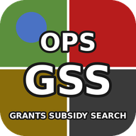

いつでも・どこでも・どんなときでも
｜所在地・企業規模・目的で使える制度を絞り込み（2026年7月時点の情報）
フォトスタジオ・ブライダル・振袖レンタル・宿泊・EC・アプリ関連の補助金・助成金情報を毎日自動収集。
法人情報を入力すると、各制度の対象要件（中小企業基本法の定義・小規模事業者の従業員基準など）に照らして「適用見込みあり」の制度だけを表示します。
※ 簡易判定です。みなし大企業（大企業の子会社等）の除外規定や課税所得要件など、詳細要件は各公募要領でご確認ください。
都道府県・市区町村独自の制度（家賃補助、創業支援、設備導入支援など）は数が多く更新も頻繁なため、以下の公式検索サイトが確実です。
※ 本ページは2026年7月時点の公開情報をもとに作成した参考資料です。補助上限・補助率・公募期間は変更されることがあるため、申請前に必ず各制度の公式サイト・公募要領をご確認ください。国の制度は原則全国どの所在地でも申請できます。